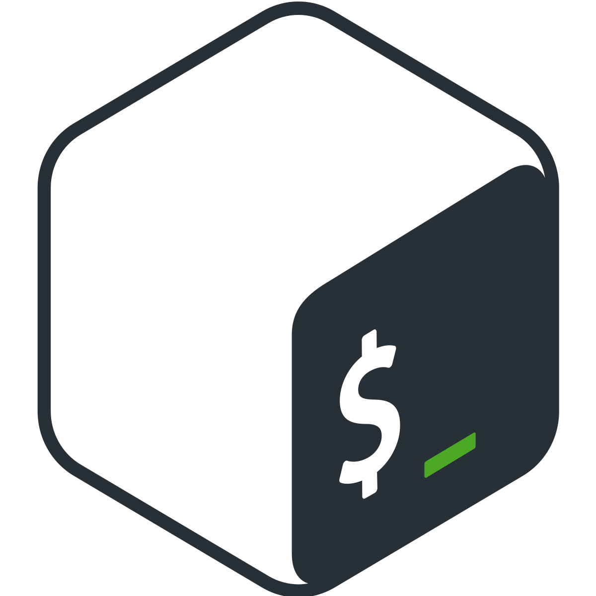
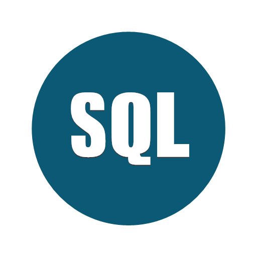
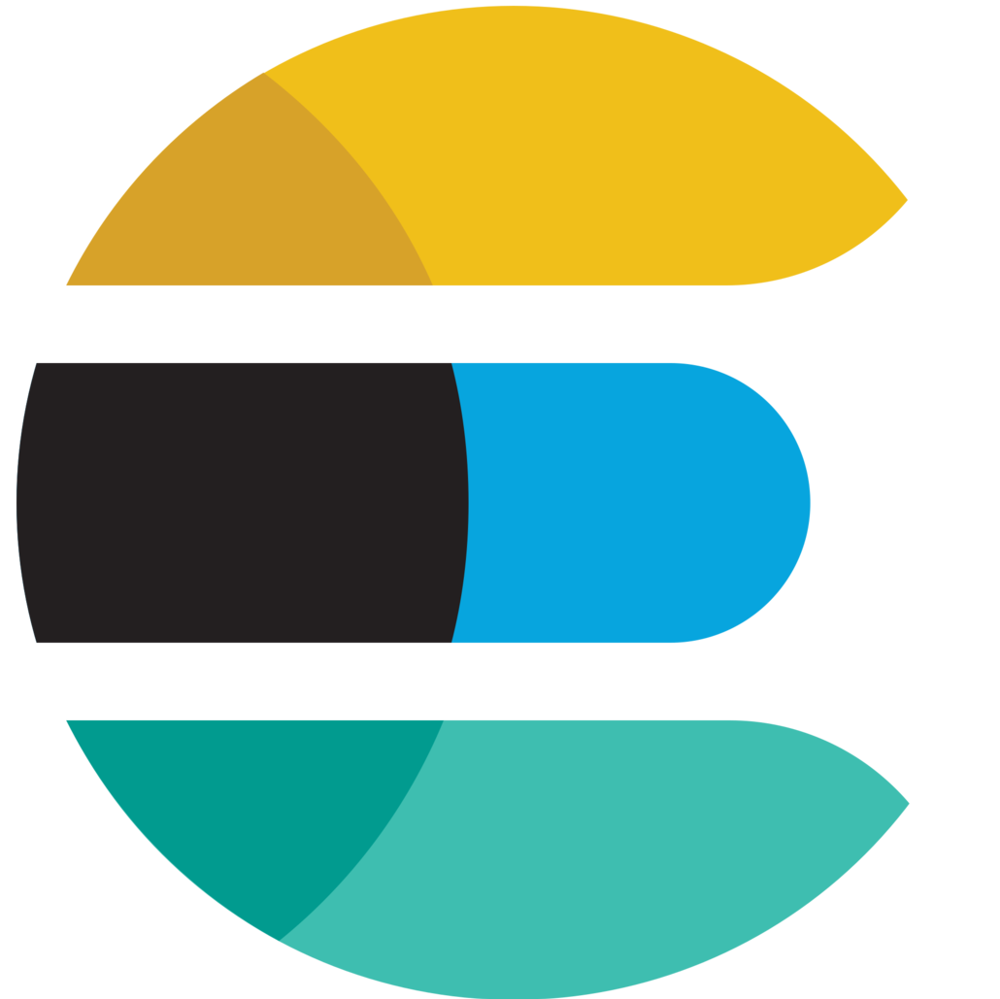
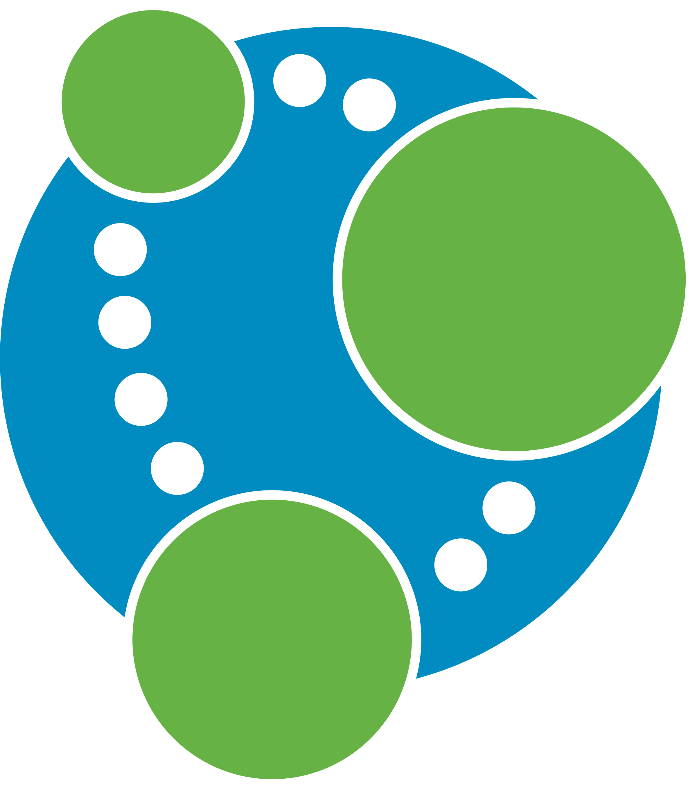
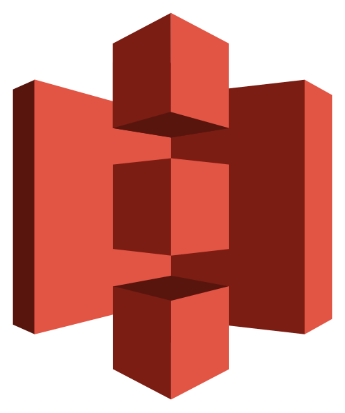
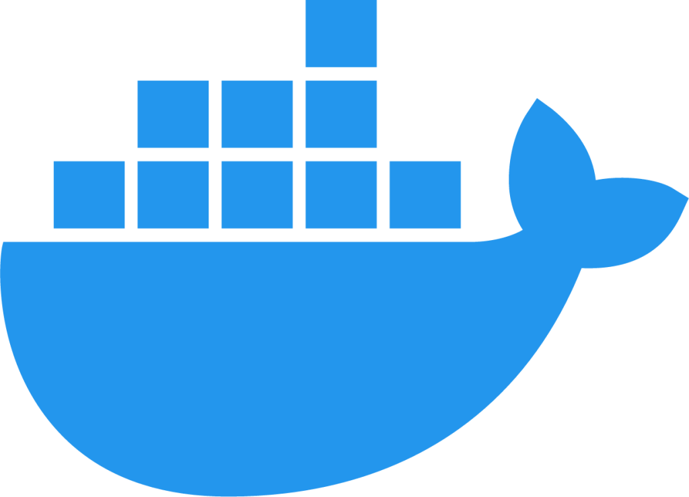

Sobre mim
Engenheira de Dados. Curiosa por natureza.
Comecei como estagiária em 2021, construindo meus primeiros scrapers e pipelines, e hoje atuo como engenheira de dados, evoluindo continuamente e acompanhando as stacks e práticas mais modernas do ecossistema. Sou formada em Ciências Econômicas, o que me ajuda a olhar para dados além da técnica e entender bem o problema antes de desenvolver soluções.
Fora do trabalho, sou movida por curiosidade. Gosto de observar aves e atualmente desenvolvo um projeto pessoal focado na catalogação de espécies da região de Uberlândia, reunindo características como formato de bico, tipo de pena, patas, alimentação e tamanho médio. A ideia é expandir essa base para todo o Brasil, que possui mais de 1.900 espécies de aves, e futuramente para uma escala global, considerando que existem mais de 10.000 espécies no mundo. Como parte disso, já criei um assistente com RAG e LLMs para identificação de aves a partir de descrições textuais.
Também ensino matemática para crianças, algo que considero extremamente gratificante. Durante a graduação, trabalhei com artesanato em papel como renda extra, produzindo cadernos e restaurando livros, atividade que hoje mantenho como hobby.
Sou leitora de ficção científica, especialmente Androides Sonham com Ovelhas Elétricas?, do Philip K. Dick, um livro que sempre me faz refletir sobre o que significa ser humano.
Perfil Técnico
Atuo há mais de 3 anos construindo e operando pipelines de dados em produção, acompanhando todo o ciclo, desde a coleta com APIs públicas e web scraping até a modelagem, armazenamento analítico e disponibilização para sistemas e áreas de negócio. Já trabalhei com bases de grande volume, na casa de centenas de milhões de registros e com dezenas de milhares de eventos processados por dia, em contextos bem diferentes, como marketplaces e dados jurídicos.
Tenho uma atuação bem completa, passando por ingestão em fontes heterogêneas e mensageria, modelagem relacional e não relacional, construção de Data Warehouses em cloud e desenvolvimento de APIs para servir os dados. Mais recentemente, tenho me aprofundado no uso de LLMs, RAG e embeddings para classificação e extração de informação em dados não estruturados, uma área que vem ganhando bastante espaço no meu trabalho.
No dia a dia, me preocupo em construir pipelines que sejam observáveis, resilientes e, principalmente, úteis para quem realmente vai consumir esses dados.
Cerfificações


Hard Skills
- ETL/ELT
- Data Pipeline
- Web Scraping
- Modelagem de dados
- Data Warehouse & Lakes
- APIs RESTful
- Arquitetura Medalhão
- Ingestão de Dados em Batch
- Processamento de Dados
- Qualidade de Dados
- Otimização de Queries
Linguagens


Banco de Dados


Cloud e Data Platform

Processamento de Dados e Orquestração
Mensageria
Ferramentas
